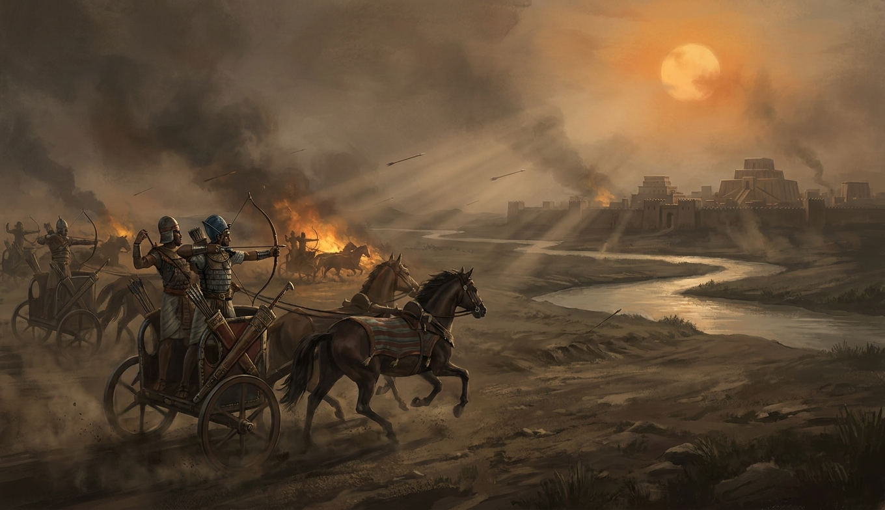
Рамзес II против хеттов у реки Оронт. Самое большое сражение колесниц в истории, около пяти тысяч с обеих сторон. Единственная битва бронзового века, описанная обеими сторонами, и из двух описаний ясно одно: фараон высек победу на стенах пяти храмов, а через 16 лет подписал с «побеждёнными» первый в истории мирный договор, копия которого висит в штаб-квартире ООН.
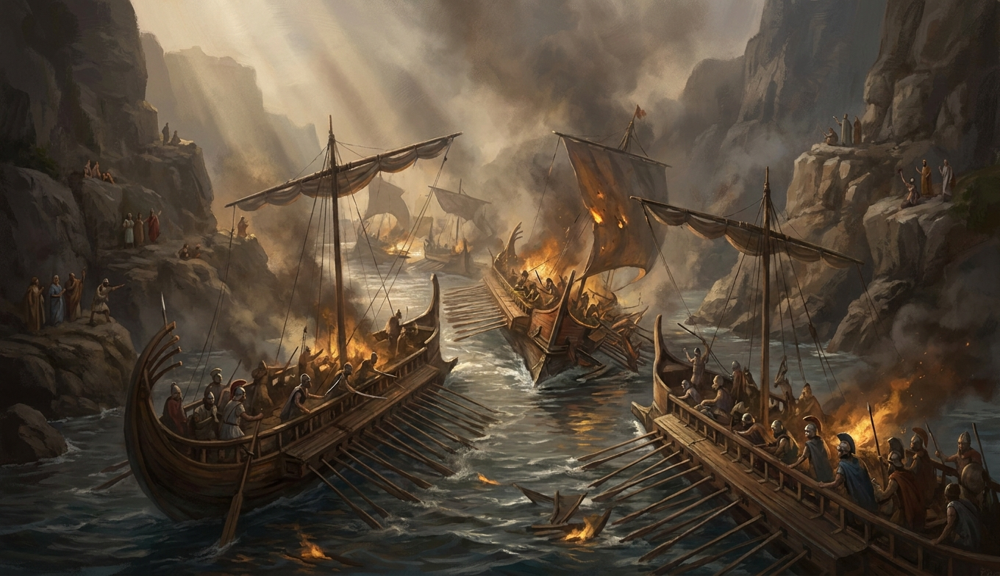
Афины сожжены, население вывезено на остров, флот греков заперт в проливе. Фемистокл посылает персам ложное сообщение, что греки собираются бежать, и Ксеркс заводит свои 800 кораблей (по Геродоту 1207) в тесноту, где их число не имеет значения. К вечеру Персия потеряла флот, а с ним снабжение армии. Через год при Платеях война кончилась.
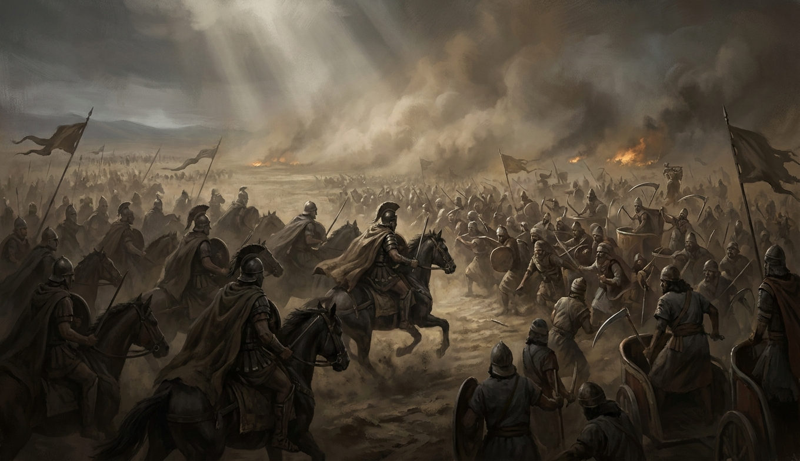
Дарий III выбрал ровную равнину под Мосулом и разровнял её для колесниц с серпами. Александр с 47 тысячами против, по самым скромным оценкам, 100 тысяч, пошёл косым строем вправо, растянул персидскую линию, дождался разрыва и ударил в него клином гетайров прямо на Дария. Дарий бежал. Через год он был мёртв, а мир от Греции до Индии говорил по-гречески ещё тысячу лет.
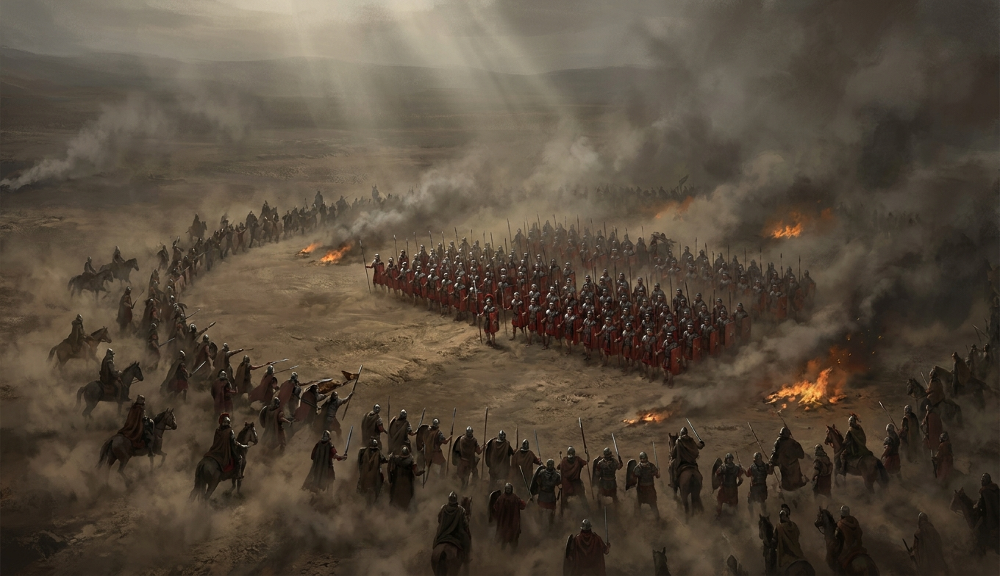
Ганнибал с 50 тысячами против 86 тысяч римлян ставит слабый центр выпуклым, даёт ему прогнуться, а африканскую пехоту на флангах разворачивает внутрь. Конница замыкает кольцо сзади. К вечеру убито от 50 до 70 тысяч римлян, больше, чем в любой день любой войны до 1916 года. Шлиффен через 2100 лет напишет об этом книгу и построит план войны против Франции. Ганнибал же после Канн не пошёл на Рим, и через 14 лет проиграл при Заме.
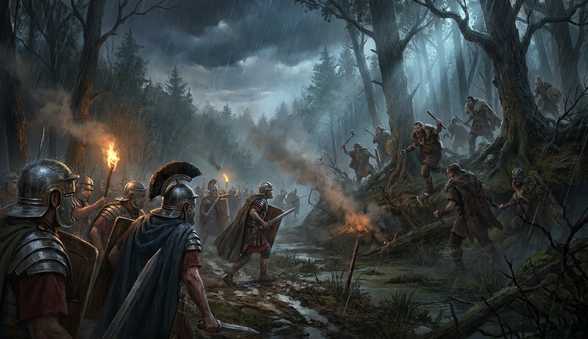
Публий Квинтилий Вар ведёт XVII, XVIII и XIX легионы, около 20 тысяч человек с обозом, по лесной дороге между холмом и болотом. Проводник - Арминий, херуск, римский гражданин, всадник, командир вспомогательных войск. Три дня в дожде под ударами из леса. Вар кончает с собой, легионы уничтожены, номера навсегда исключены из списка. Август месяцами бился головой о дверь: «Квинтилий Вар, верни легионы!»
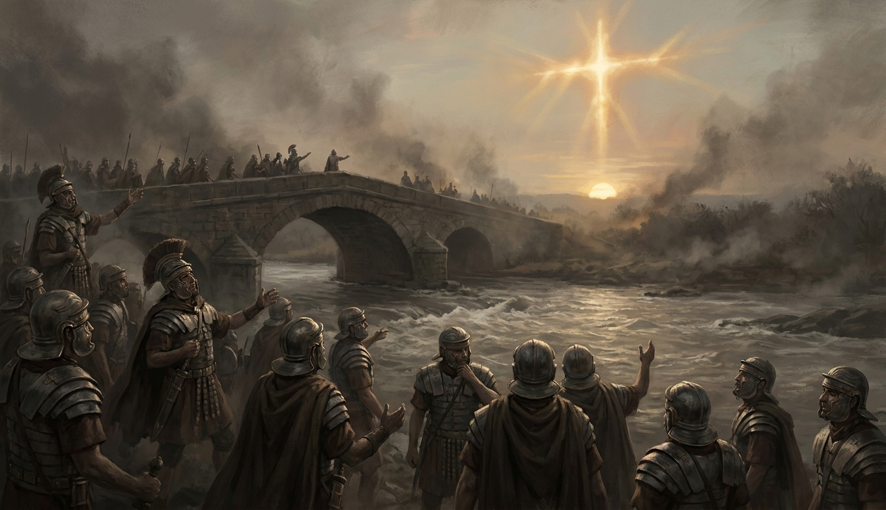
Константин с 40 тысячами против Максенция с 75 тысячами у моста через Тибр на северной окраине Рима. Накануне, по Лактанцию, сон, а по Евсевию, знак в небе над солнцем и надпись «этим побеждай». Константин велит нарисовать на щитах монограмму Христа. Максенций выводит армию из города, ставит спиной к реке, проигрывает и тонет в Тибре в доспехах. Через год Миланский эдикт: христианство разрешено. Через 68 лет обязательно.
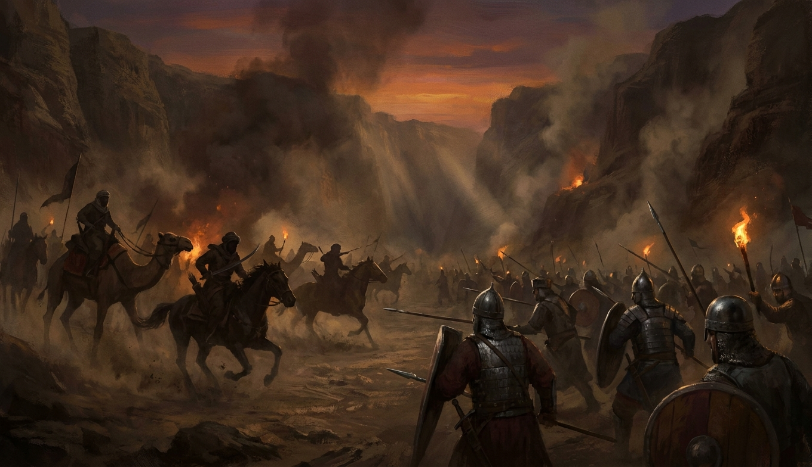
Ираклий только что вернул у персов Иерусалим и Крест, и тут из пустыни приходят люди, о которых Константинополь не знал ничего. Халид ибн аль-Валид с 25-40 тысячами против византийской армии, вдвое большей, на плато над рекой Ярмук. Шесть дней, песчаная буря, конница Халида в тылу, и империя теряет Сирию, Палестину, а через шесть лет Египет, навсегда. Ираклий: «Прощай, Сирия, прекрасная провинция. Теперь ты принадлежишь врагу».
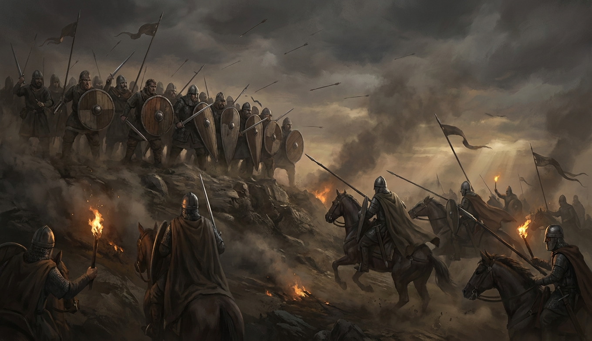
Гарольд Годвинсон за три недели до этого разбил норвежцев у Стамфорд-Бриджа на севере, прошёл 400 километров на юг и встал на холме Сенлак стеной щитов. Вильгельм Нормандский девять часов ломал стену конницей и лучниками, дважды изображал бегство, и к закату Гарольд был мёртв. Англия получила новую знать, новый закон, новую архитектуру и язык, в котором 60% слов из французского и латыни.
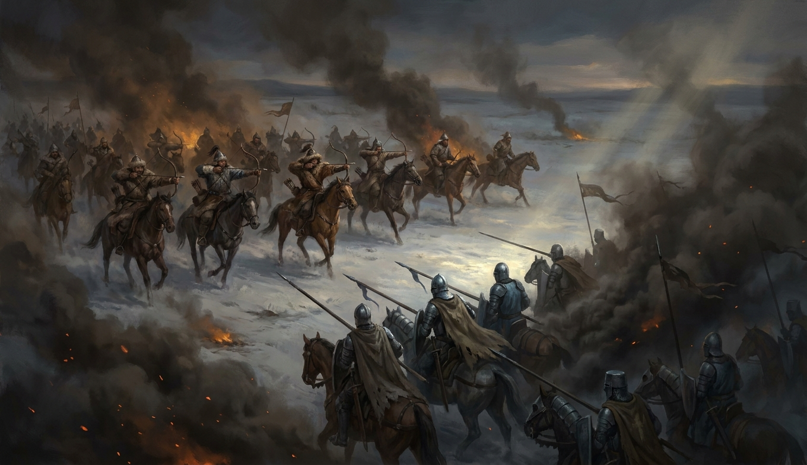
Байдар и Кадан с одним туменом разгромили под Легницей польско-немецкое войско Генриха Благочестивого, его голову носили на пике. Через два дня Бату и Субэдэй у Мохи уничтожили венгерскую армию Белы IV. Между монголами и Атлантикой не осталось ни одной армии. В декабре умер великий хан Угэдэй, и в 1242 году вся Орда развернулась на восток выбирать преемника. Больше на Запад она не вернулась.
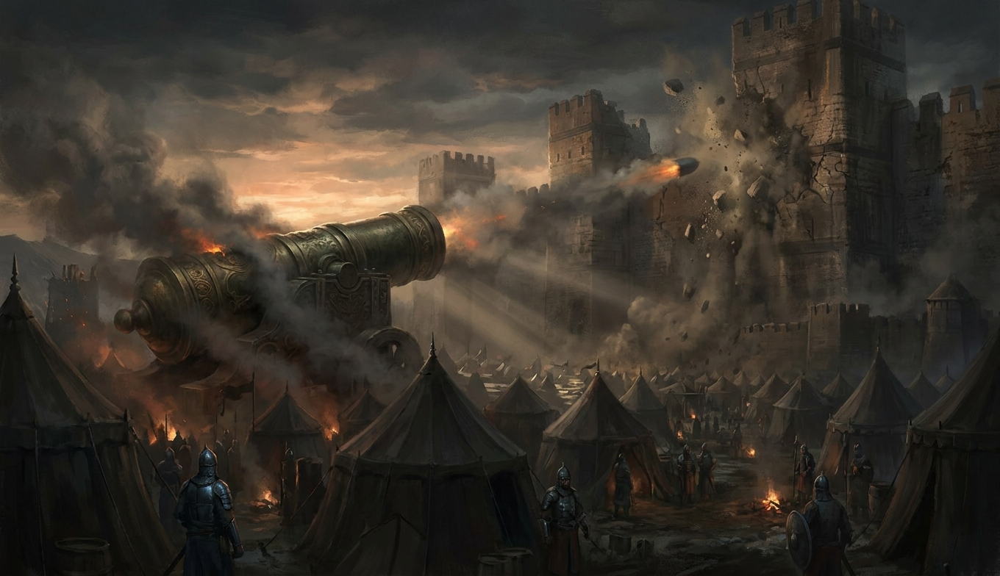
Венгр Урбан предложил пушку императору Константину XI, тот не смог заплатить, и Урбан пошёл к Мехмеду II. Восемь метров, ядро в 600 килограммов, семь выстрелов в день, 60 быков тащили два месяца. 53 дня осады, 80 тысяч против 7 тысяч защитников, корабли, перетащенные по суше в Золотой Рог. Император погиб в проломе. Средневековье в учебниках кончается этой датой, и это редкий случай, когда учебник прав.
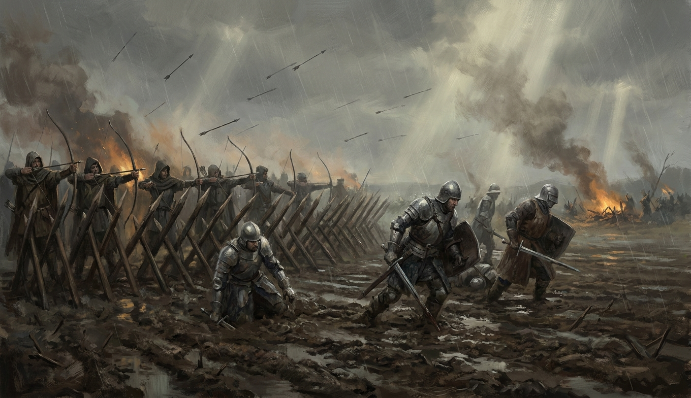
Креси: Эдуард III ставит спешенных рыцарей между клиньями лучников, французская конница атакует 15 раз и теряет 1500 рыцарей. Азенкур: Генрих V с 6-9 тысячами, половина больны дизентерией, против 12-25 тысяч на свежевспаханном поле после недели дождей. Французские рыцари идут пешком в грязи по колено под 1000 стрел в секунду, падают, и задние ряды давят передних. Шекспир написал про это лучшую речь в английской литературе.
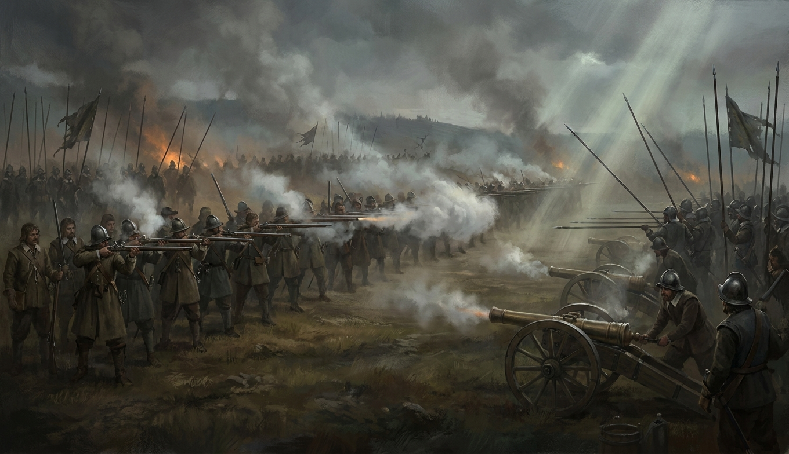
Густав II Адольф с 23 тысячами шведов и 18 тысячами ненадёжных саксонцев против Тилли с 35 тысячами имперцев, построенных испанскими терциями, квадратами в 1500-2000 человек, непобедимыми сто лет. Саксонцы бежали в первый час. Шведы стояли в шесть шеренг, стреляли залпом, лёгкие пушки на конной тяге успевали за пехотой, конница атаковала холодным оружием. Тилли потерял 20 тысяч и Германию. Так воевали следующие 200 лет.
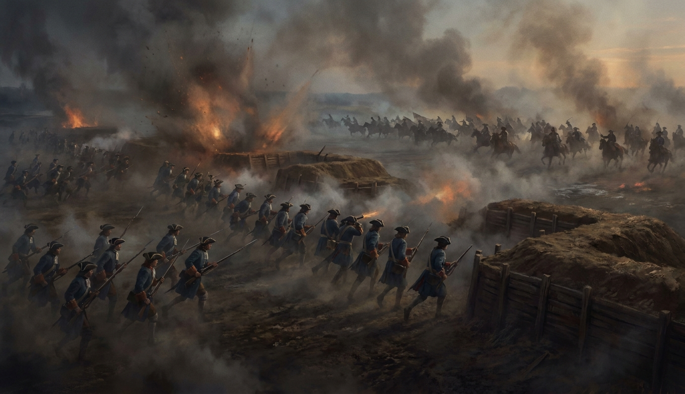
Карл XII, непобедимый девять лет, с 20 тысячами измотанных зимой солдат, раненый в ногу, на носилках. Пётр с 40 тысячами, редутами поперёк поля и 100 пушками против четырёх шведских. Шведская пехота прорвала редуты, потеряла треть, встала в поле под картечью и была сломана за два часа. Через три дня остаток армии сдался у Переволочны. Карл бежал в Турцию на пять лет, и великая держава Балтики кончилась.
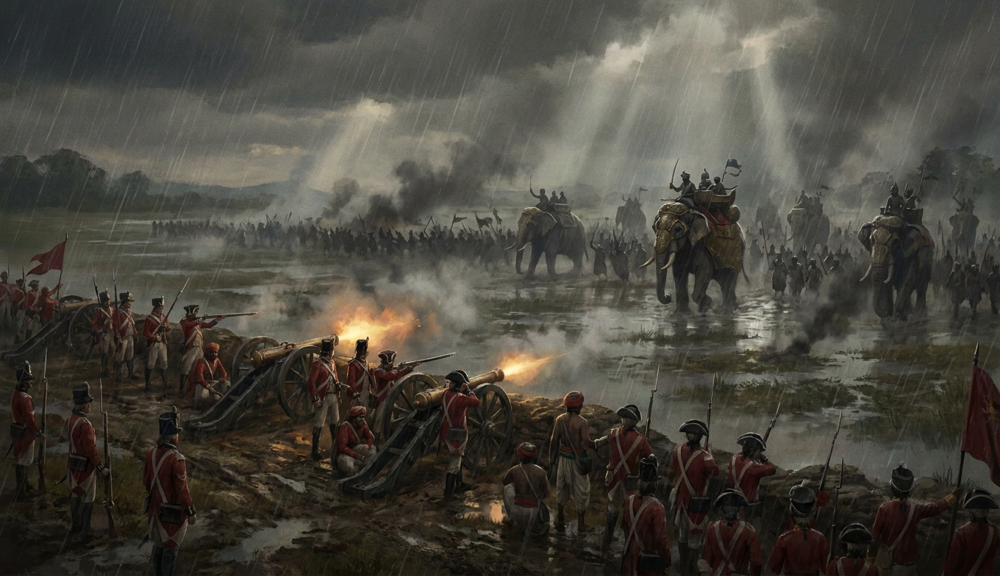
Роберт Клайв, клерк Ост-Индской компании, ставший полковником, с 900 европейцами и 2200 сипаями против наваба Бенгалии Сирадж-уд-Даулы с 50 тысячами и 53 пушками. Клайв заранее купил командующего наваба Мир Джафара за трон. Дождь намочил порох наваба, англичане накрыли своё брезентом. Мир Джафар не двинулся с места. Потери англичан: 22 убитых. Через год Компания собирала налоги с 30 миллионов человек.
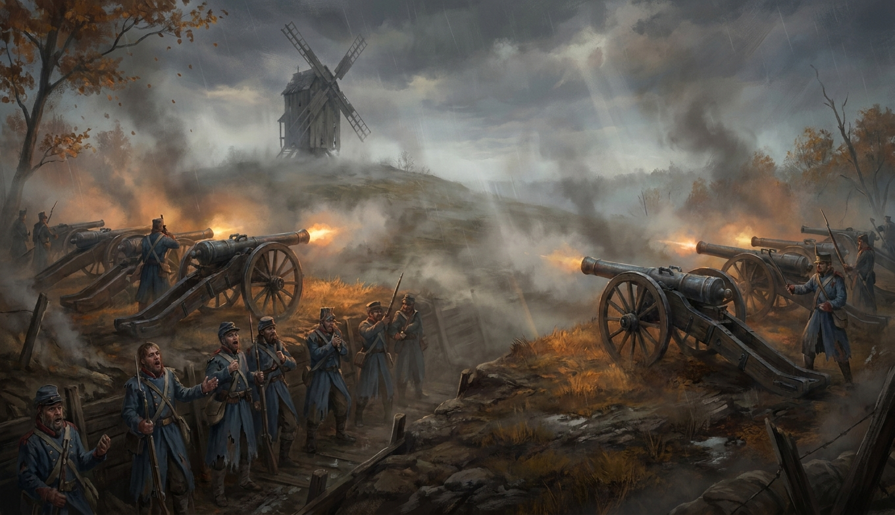
Саратога: британский генерал Бургойн с 6 тысячами сдаётся ополчению и Континентальной армии Гейтса. После этого Франция объявляет войну Британии, и США существуют. Вальми: прусская армия герцога Брауншвейгского, лучшая в Европе, идёт на Париж восстанавливать Людовика XVI, встречает у мельницы французскую армию из старых полков и добровольцев, канонада, ни одной атаки, пруссаки уходят. Гёте, стоявший в прусском обозе: «С этого дня и с этого места начинается новая эпоха всемирной истории».
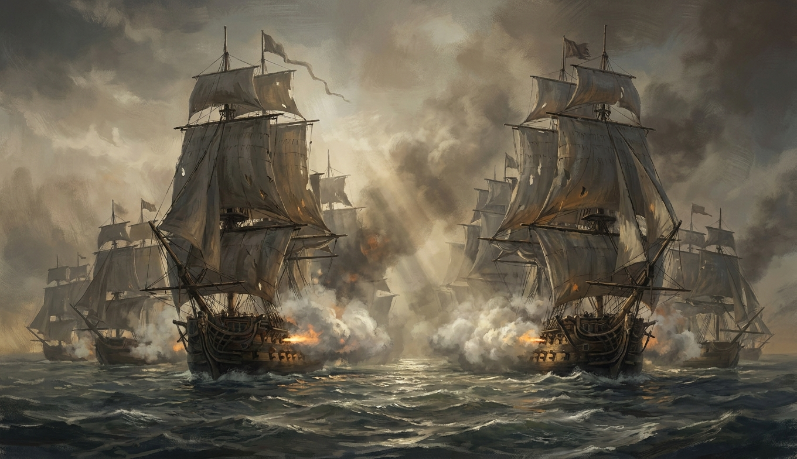
Трафальгар: Нельсон двумя колоннами перпендикулярно режет франко-испанскую линию из 33 кораблей, берёт 22, теряет ноль, погибает сам. Британия хозяйка моря до 1914 года. Ватерлоо: Веллингтон на гребне Мон-Сен-Жан держит французов девять часов, пока Блюхер идёт с востока, старая гвардия отступает впервые в истории, и Европа получает Венский порядок на 40 лет. Между ними Аустерлиц, Бородино и Лейпциг, и лекция объясняет, почему они не в списке.
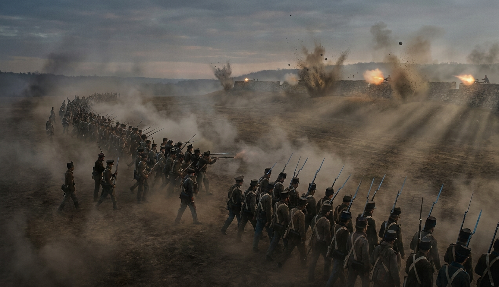
Энтитем: самый кровавый день в истории Америки, 23 тысячи за сутки, ничья, после которой Ли ушёл из Мэриленда, Линкольн объявил освобождение рабов, а Британия передумала признавать Юг. Геттисберг: три дня, 50 тысяч потерь, и атака Пикетта, 12 тысяч человек через полтора километра открытого поля на каменную стену. Дошла половина, вернулась треть. С этого поля армии Европы ничему не научились, и через 51 год повторили его в масштабе 1 к 100.
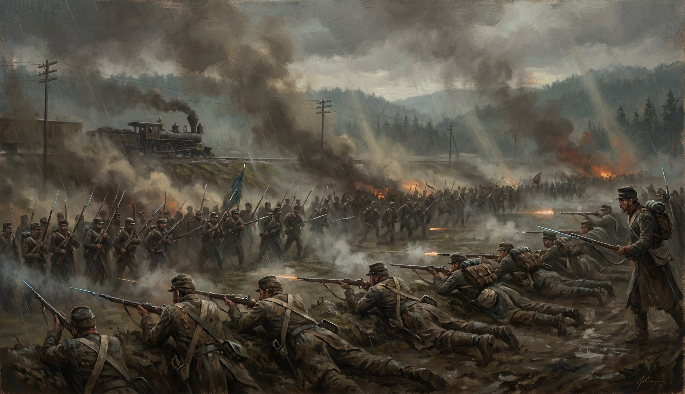
Мольтке разводит три прусские армии на 100 километров и сводит их на поле по железным дорогам и телеграфу, «врозь идти, вместе бить». Австрийцы Бенедека стоят на высотах с дульнозарядными ружьями и колоннами. Прусская пехота лёжа стреляет из казнозарядного Дрейзе по 5 выстрелов в минуту. К обеду подошла армия кронпринца во фланг, к вечеру австрийцы потеряли 44 тысячи против 9. Через четыре года Седан, через пять Германская империя, через 48 лет две мировые войны.
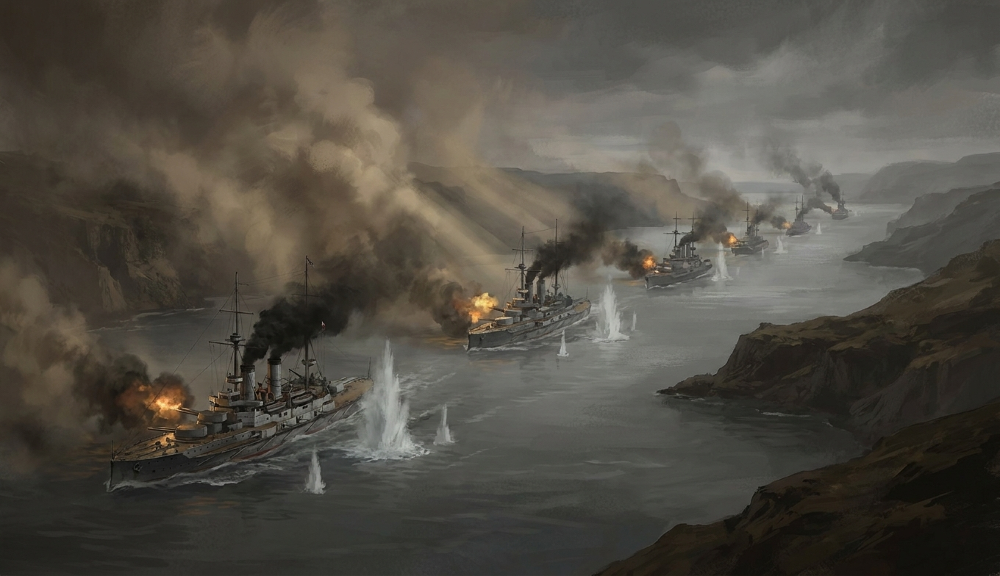
Вторая Тихоокеанская эскадра Рожественского прошла 33 тысячи километров от Балтики вокруг Африки, с углём на палубах и обросшими днищами. Того встретил её в проливе, сделал поворот «Т» перед носом колонны и расстрелял головные броненосцы фугасами с 6 километров. Из 38 русских кораблей 21 потоплен, 7 сдались, до Владивостока дошёл крейсер и два миноносца. Японцы потеряли три миноносца. Первая победа Азии над европейской державой в новое время.
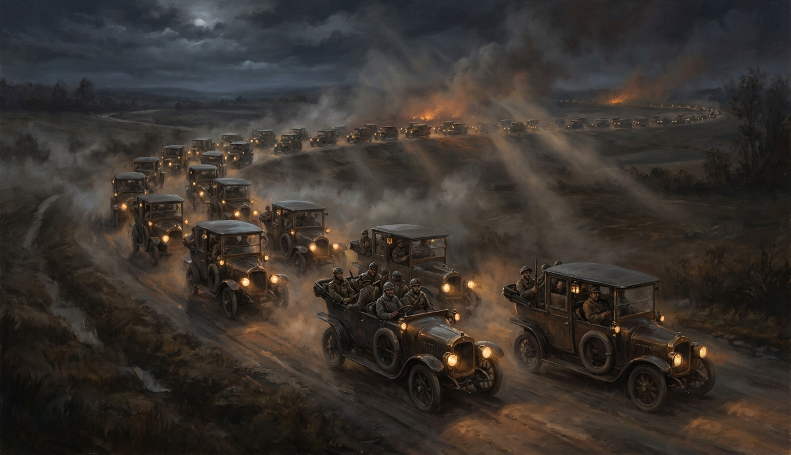
Сентябрь 1914: немецкое правое крыло, идущее по плану Шлиффена в обход Парижа, поворачивает раньше времени и подставляет фланг. Жоффр контратакует, Галлиени везёт 6 тысяч солдат на 600 такси, между 1-й и 2-й армиями открывается разрыв в 50 километров, и Мольтке-младший отдаёт приказ отходить. Война «до Рождества» стала окопами от моря до Швейцарии на четыре года. Верден через полтора года: 300 дней, 700 тысяч потерь, линия фронта сдвинулась на несколько километров и вернулась.
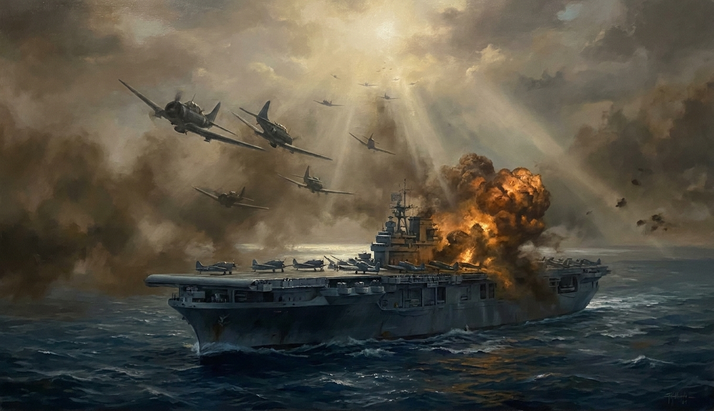
Ямамото ведёт к Мидуэю 4 тяжёлых авианосца, 11 линкоров, 200 кораблей, чтобы выманить и добить американский флот, вторая Цусима. Американцы знают план: криптографы Рошфора в Пёрл-Харборе читают японский код JN-25 и придумали трюк с «нехваткой воды на Мидуэе», чтобы подтвердить цель. Три авианосца Нимица ждут в засаде. В 10:22 пикировщики Маккласки выходят на японские авианосцы с самолётами на палубах и бомбами на палубах. К 10:28 три из четырёх горят. Линкор кончился как класс, Япония как наступающая сторона.
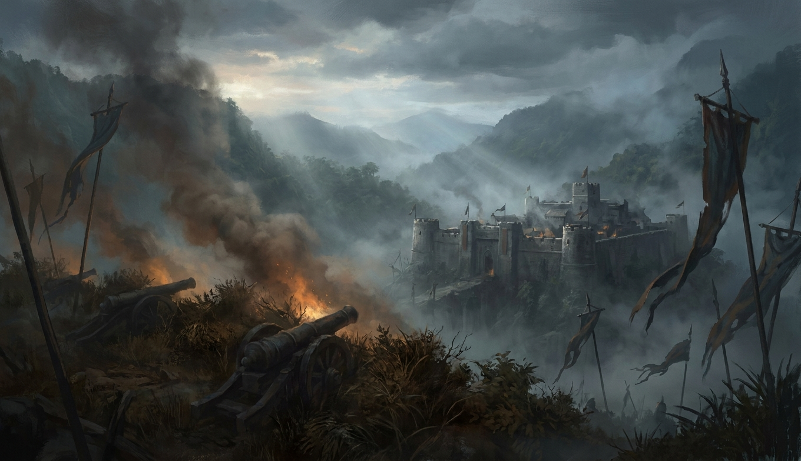
Французы сажают 15 тысяч человек в долину на границе с Лаосом, чтобы выманить Вьетминь на открытый бой, где авиация и артиллерия всё решат. Зяп за три месяца втаскивает на окружающие горы 200 орудий по частям на велосипедах и спинах 60 тысяч носильщиков и вкапывает их в склоны. Аэродром закрыт огнём в первый день. 56 дней осады траншеями по-вердеенски, 11 тысяч пленных. Через два месяца Женева, Франция уходит из Индокитая, через восемь лет из Алжира.
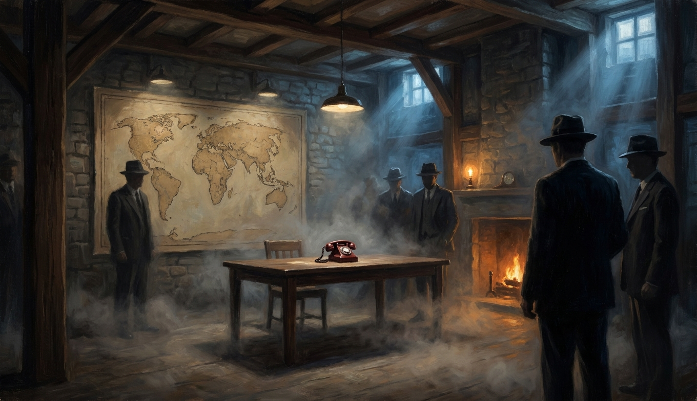
Ракеты Р-12 на Кубе, блокада, DEFCON 2, подводная лодка Б-59 с ядерной торпедой, которую не пустил один офицер, Архипов, потому что для пуска нужны были три подписи. 27 октября сбит U-2, Кастро просит Хрущёва ударить первым. 28 октября Хрущёв по радио объявляет вывод ракет, Кеннеди тайно обещает убрать «Юпитеры» из Турции. Самое судьбоносное сражение второй половины века - то, которое не состоялось.
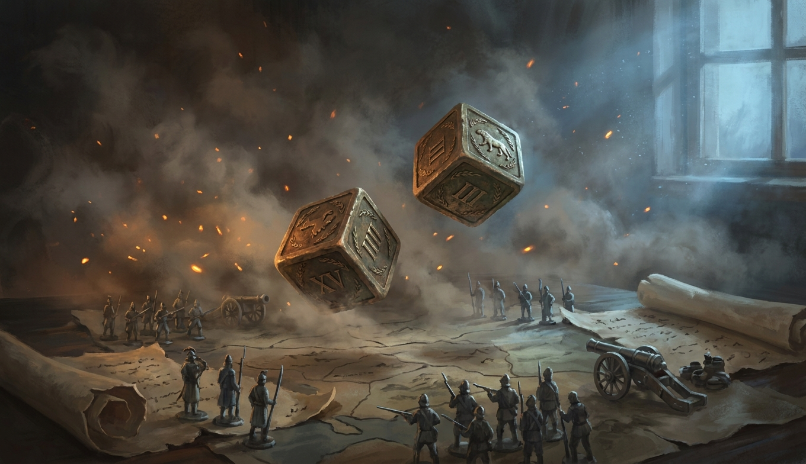
Что измерено по ведомостям, что выведено, о чём спорят. Вопрос, на который лекция не отвечает: почему половина «решающих» битв стала решающей только в учебнике. И «alea iacta est», которую Цезарь сказал на другом языке, с другим смыслом и в другом наклонении.
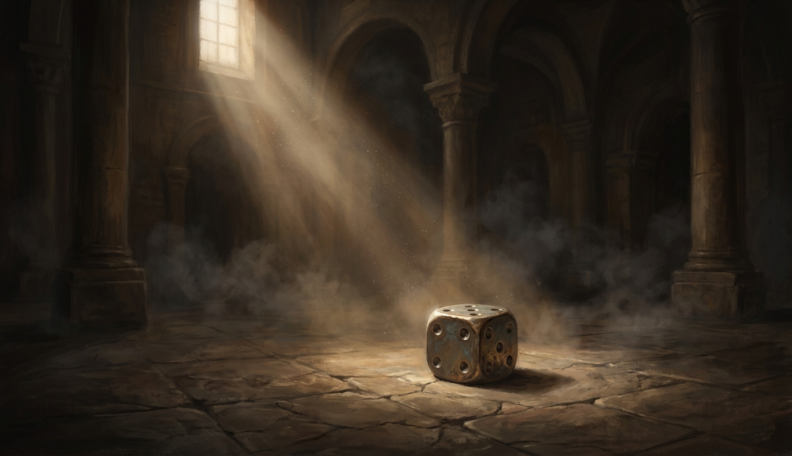
Колесницы у Оронта, триеры в проливе, клин на Дария, кольцо у Канн, три орла в болоте, монограмма на щитах, стена щитов на холме, пушка Урбана, грязь под Азенкуром, залп при Брейтенфельде, редуты Полтавы, подпись Мир Джафара, канонада у мельницы, две колонны Нельсона, стена на Геттисберге, игольчатое ружьё, поворот Того, такси, пять минут над Мидуэем, пушки на велосипедах и одна подпись, которой не было.